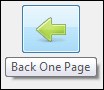
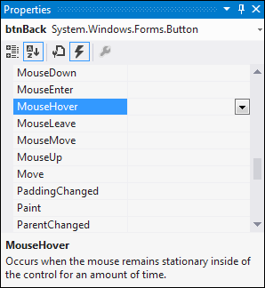

Adding ToolTips in C# .NET

To get ToolTips, you need to create a ToolTip object. You then pass it the name of the form object you want the ToolTip for, and the text you want to display.
The ToolTip control can be added using the toolbox. It's under the Common Controls category.
Double click to add one to your project, and you'll see it appear at the bottom of the screen, rather than on the form.
You want the text of the ToolTip to appear when the mouse is over a button. Buttons have a Hover event, so we can use that for the code.
To get to the Hover event, click on a button to select it. In the properties area on the right, click the lightning bolt icon to see a list of event. Locate the MouseHover event:

Double click where it says MouseHover, and it will open up the code stub. Now enter the following code:
toolTip1.SetToolTip( btnBack, "Back One Page" );
So the ToolTip has an in-built method called SetToolTip. In between the round brackets of SetToolTip you need two things: the name of the object you want the ToolTip for, and the Text to go in the yellow box. We called our button btnBack, so that's we put as the first argument. The text comes after a comma, and in quote marks.
Run your programme and test it out. Now hold your mouse over your button and you should see your ToolTip:
Exercise
Add ToolTips for your other four buttons. You can have any text you want for
your ToolTips.
Exercise
If you wanted to, you could have a Rollover effect for your buttons. This is
when the image on the button changes when the mouse hovers over it. When you
take your mouse away, it will go back to the original image. The only thing
you need for your MouseHover event is this:
btnBack.Image = imageList1.Images[2];
What you're doing here is setting the Image property of the button to one of the images from your Image list, Images[2] in the code above. You can get the numbers from the dropdown list you saw earlier, for the ImageIndex property of the button. Use the MouseLeave event to reset the image to the original.
We'll move on now. The next section introduces you to Classes and Objects.